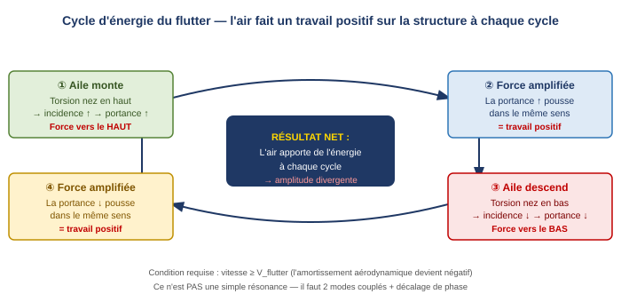
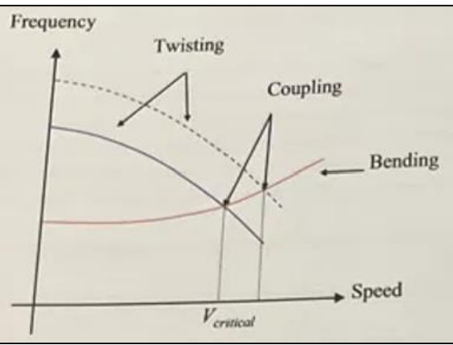
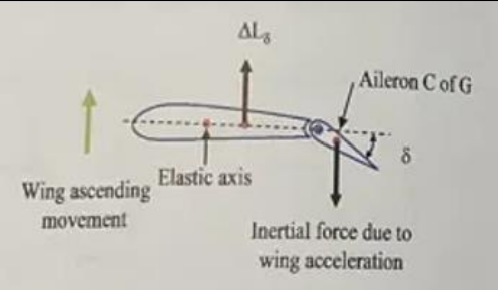
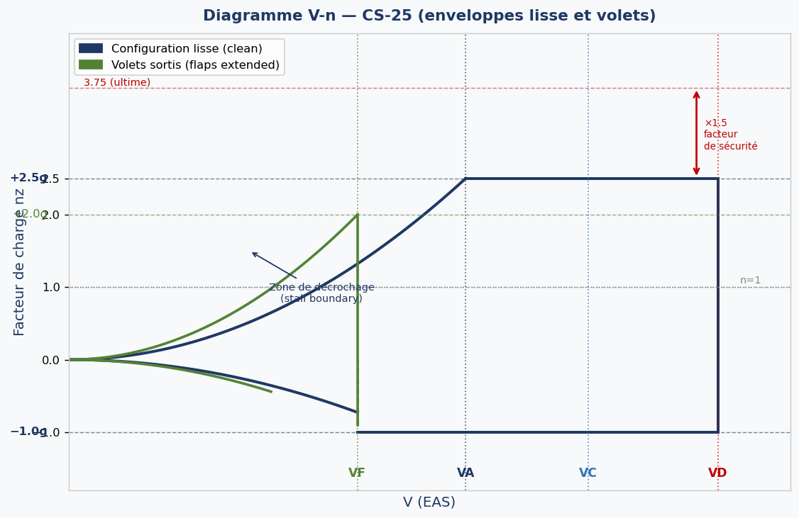
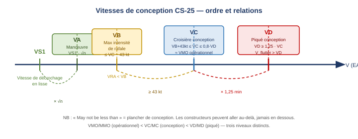
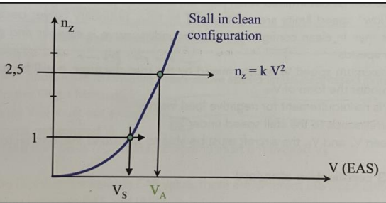
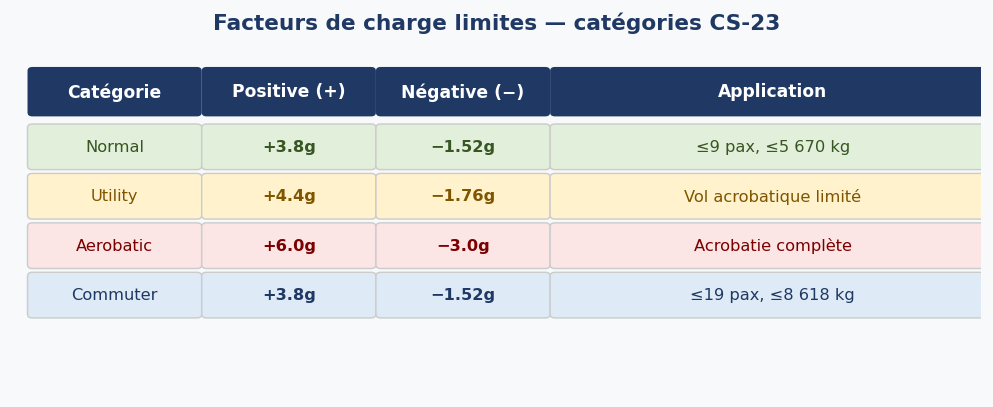
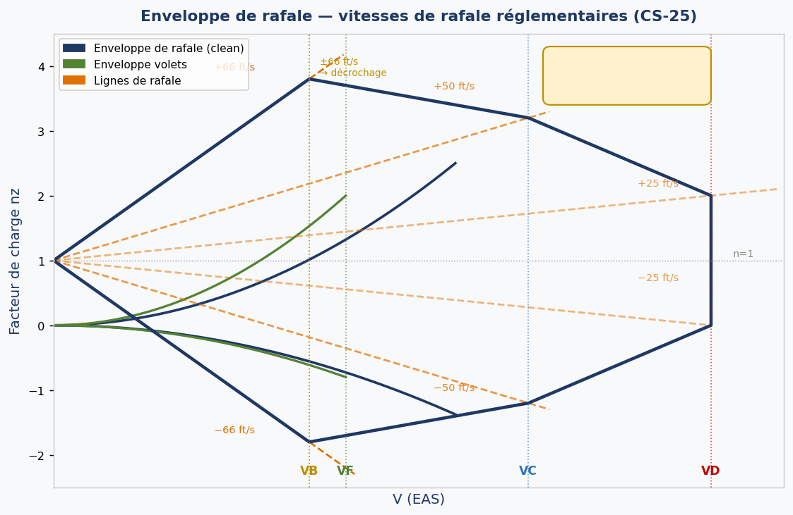
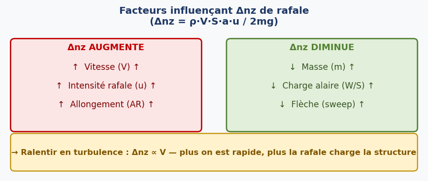

1. Flutter
1.1 Définition et mécanisme
Le flutter est une vibration auto-entretenue et divergente d'une structure aéronautique. Contrairement à une résonance classique, l'air n'amortit pas l'oscillation : il lui apporte de l'énergie à chaque cycle, ce qui fait croître l'amplitude jusqu'à la rupture structurale.
Trois ingrédients sont indispensables à l'apparition du flutter :
- une structure flexible capable de se déformer en flexion (bending) et/ou en torsion (torsion) ;
- deux degrés de liberté couplés (ex. : flexion + torsion) ;
- une vitesse supérieure ou égale à la vitesse critique de flutter V_flutter, au-delà de laquelle l'amortissement aérodynamique devient négatif.
1.2 Cycle d'énergie
Le mécanisme peut être décomposé en quatre phases successives illustrant comment l'air effectue un travail positif sur la structure à chaque demi-cycle :

Lors de la montée de l'aile, la torsion nez-haut augmente l'incidence, ce qui augmente la portance dans la direction du mouvement (travail positif). Lors de la descente, la torsion nez-bas réduit l'incidence, réduisant la portance, mais toujours dans la direction du mouvement. Le résultat net est une injection d'énergie à chaque cycle.
1.3 Coalescence des modes et vitesse critique
À basse vitesse, les deux modes vibratoires (flexion et torsion) ont des fréquences bien séparées. La fréquence propre s'exprime par :
Avec k = raideur (stiffness), m = masse de la section. La torsion a une fréquence plus élevée (k grand) ; la flexion a une fréquence plus basse (k petit).
Lorsque la vitesse augmente, le moment aérodynamique de torsion réduit la raideur effective en torsion, faisant descendre la fréquence de torsion. À la vitesse critique V_flutter, les deux fréquences se rejoignent (coalescence ou mode crossing) : l'amortissement s'annule et l'oscillation diverge.

1.4 Remèdes contre le flutter
1.4.1 Flutter aile flexion/torsion
Deux approches structurales permettent de repousser V_flutter :
- Augmenter la raideur en torsion : les courbes de fréquence s'éloignent davantage, la coalescence est repoussée à une vitesse plus élevée ;
- Déplacer le centre de gravité (CG) de section vers l'axe élastique (mass balancing, équilibrage de masse) : réduit le bras de levier inertiel et donc le couplage entre les deux modes ;
- Moteurs sous les ailes : la masse des réacteurs, placée en avant de l'axe élastique, décale naturellement le CG vers l'avant, réduisant l'impulsion de torsion.
1.4.2 Flutter des gouvernes
Une gouverne non équilibrée a son CG en arrière de son axe de rotation (charnière). Lors d'une accélération de l'aile, la force d'inertie de la gouverne la défléchit dans le sens du mouvement, créant une variation de portance en phase avec l'oscillation — c'est du flutter de gouverne.

Avec S = moment statique, m = masse de la gouverne, d = distance entre le CG et l'axe de charnière / l'axe élastique.
Quand d → 0, S = 0 : le couplage inertiel est supprimé.
En pratique, l'équilibrage de masse est réalisé en ajoutant des masses en plomb à l'avant du bord d'attaque de la gouverne, ce qui rapproche le CG de l'axe de charnière. Le même principe s'applique à l'aileron, à la gouverne de profondeur (elevator) et à la gouverne de direction (rudder).
2. Enveloppe de manœuvre (diagramme V-n)
2.1 Facteur de charge nz
Le facteur de charge nz est le rapport entre la portance (ou la résultante des forces aérodynamiques) et le poids de l'aéronef. Il représente la charge structurale apparente subie par l'appareil :
nz = 1 → vol en palier rectiligne ; nz > 1 → virage ou ressource ; nz < 0 → manœuvre inversée brusque.
La distinction entre charge limite et charge ultime est fondamentale en certification :
- Charge limite (limit load) : charge maximale attendue en service. La structure ne doit subir aucune déformation permanente.
- Charge ultime (ultimate load) = charge limite × 1,5. La structure doit résister pendant au moins 3 secondes sans rupture, mais des déformations permanentes sont tolérées.
- Au-delà de la charge ultime : rupture structurale.
2.2 Construction du diagramme V-n
Le diagramme V-n (V-n diagram ou manoeuvring load diagram) représente graphiquement le facteur de charge en fonction de la vitesse. Il délimite l'enveloppe dans laquelle l'aéronef peut voler sans dépasser ses charges structurales limites.

La courbe de décrochage constitue la limite gauche du diagramme. Elle suit la loi :
La portance maximale croît comme V² : la structure peut supporter de plus en plus de g à mesure que la vitesse augmente, jusqu'à atteindre le facteur limite.
2.3 Vitesses de conception CS-25

VA — Vitesse de manœuvre
VA est la vitesse de manœuvre (manoeuvring speed) : la vitesse maximale à laquelle il est permis d'appliquer une déflexion totale d'une seule gouverne sans dépasser la charge limite. En dessous de VA, toute déflexion maximale d'une gouverne provoque le décrochage avant que la charge limite soit atteinte.
Pour CS-25 : VA = VS1 × √2,5. Cette formule découle de l'égalité : à VA, la vitesse de décrochage à nlimg est atteinte exactement.
Avec VS1 = vitesse de décrochage en lisse (1g).
Démonstration : En palier 1g, mg = ½ρ₀·VS1²·S·CLmax. En facteur n, n·mg = ½ρ₀·VS(n)²·S·CLmax. En divisant : VS(n) = VS1·√n. VA est donc la vitesse de décrochage au facteur limite n.
Exemple : VA = 200 kt à 20 000 kg → VA = 200 × √(18000/20000) ≈ 190 kt à 18 000 kg.

VB — Vitesse pour l'intensité de rafale maximale
VB est la vitesse pour l'intensité de rafale maximale (design speed for maximum gust intensity). C'est la vitesse à laquelle l'avion doit pouvoir rencontrer la rafale réglementaire maximale (±66 ft/s) et décrocher, sans dépasser la charge limite. VB est déterminée graphiquement comme l'intersection de la ligne de rafale à ±66 ft/s avec la courbe de décrochage dans le diagramme de rafale.
VC — Vitesse de croisière de conception
VC est la vitesse de croisière de conception (design cruise speed). Elle doit respecter :
- Minimum : VB + 43 kt (pour éviter une rafale à VC de dépasser le facteur limite)
- Maximum : 0,8 × VD
- En exploitation, la limite opérationnelle VMO correspond approximativement à VC.
VD — Vitesse de piqué de conception
VD est la vitesse de piqué de conception (design dive speed). Elle doit satisfaire VD ≥ 1,25 × VC. C'est le plancher absolu en conception ; les constructeurs peuvent aller plus haut, jamais plus bas. V_flutter doit être supérieure à VD.
2.4 Vitesses opérationnelles (VMO, VNE, VNO)
Les vitesses de conception (VA, VC, VD) définissent l'enveloppe structurale. Les vitesses opérationnelles sont celles qui figurent dans l'AFM et sur les instruments :
| Vitesse | Norme | Définition | Affichage |
|---|---|---|---|
| VMO / MMO | CS-25 | Vitesse / Mach opérationnel maximum | Barquette rouge sur ASI ; le plus restrictif des deux s'applique |
| VNE | CS-23 | Vitesse à ne jamais dépasser (Never Exceed) | Trait rouge, fin de l'arc jaune (air calme seulement) |
| VNO | CS-23 | Vitesse normale maximale (Normal Operating) | Sommet de l'arc vert |
| VLO | Tous | Vitesse train en transit (gear operating) | AFM |
| VLE | Tous | Vitesse train sorti (gear extended) | AFM |
| VFE | Tous | Vitesse volets sortis (flap extended) | Sommet de l'arc blanc |
2.5 Facteurs de charge CS-25 et catégories CS-23
En CS-25 (avions de transport, > 5 700 kg), les facteurs de charge limites sont :
- Configuration lisse (clean) : +2,5g / −1g
- Volets sortis (flaps down) : +2,0g / −1g
La vérification structurale à la vitesse VFE suppose : en air calme 0 ≤ nz ≤ 2 ; en air turbulent, une rafale de 25 ft/s.
Pour CS-23 (avions légers, ≤ 9 pax et ≤ 5 670 kg, ou Commuter ≤ 19 pax et ≤ 8 618 kg), les facteurs limites dépendent de la catégorie :

2.6 Facteurs influençant le diagramme V-n
Deux paramètres principaux déplacent ou déforment l'enveloppe de manœuvre :
La masse : la charge limite est une force fixée à la masse maximale de certification. Un avion plus léger atteint un facteur de charge plus élevé pour la même force, mais en même temps VA est plus basse (VA ∝ √m). Le diagramme V-n est donc valable pour une masse spécifiée.
L'altitude : à haute altitude, le nombre de Mach critique (MC, MD) devient limitant avant que l'aile puisse atteindre +2,5g. La partie haute droite de l'enveloppe est coupée par une limite Mach verticale. Le facteur de charge de 2,5g peut devenir inaccessible.
3. Enveloppe de rafale (diagramme de rafale)
3.1 Mécanisme : comment une rafale génère un facteur de charge
Une rafale verticale de vitesse u (ft/s ou m/s) modifie instantanément l'incidence (angle of attack) de l'aile. Le facteur de charge supplémentaire est généré en quatre étapes :
① Variation d'incidence : Δα ≈ u/V
② Variation du coefficient de portance : ΔCL = a·Δα = a·u/V (avec a = pente de la courbe CL−α)
③ Variation de portance : ΔL = ½ρV²·S·ΔCL = ½ρV·S·a·u (les V² et V se simplifient en V)
④ Facteur de charge : Δnz = ΔL/mg → linéaire en V, pas quadratique.
Donc : nz = 1 + (ρSau / 2mg) × V. Sur le diagramme de rafale, les lignes de rafale sont des droites (proportionnelles à V), non des paraboles — contrairement à l'enveloppe de manœuvre.
3.2 Construction du diagramme de rafale
Les vitesses de rafale réglementaires (CS-25) varient avec l'altitude :
| Vitesse de vol | Rafale 0–20 000 ft | Rafale à 50 000 ft |
|---|---|---|
| VB | ±66 ft/s (20,1 m/s) | ±38 ft/s (11,6 m/s) |
| VC | ±50 ft/s (15,2 m/s) | ±25 ft/s (7,6 m/s) |
| VD | ±25 ft/s (7,6 m/s) | ±12,5 ft/s (3,8 m/s) |
Les vitesses de rafale sont constantes de 0 à 20 000 ft, puis décroissent linéairement jusqu'à 50 000 ft. Chaque ligne de rafale part de nz = 1 (vol en palier, sans rafale) et monte ou descend linéairement avec V. VB est définie comme l'intersection de la ligne ±66 ft/s avec la courbe de décrochage.

3.3 Facteurs influençant Δnz et vitesse VRA

Les conséquences pratiques sont les suivantes :
- Flèche ↑ → Δnz ↓ (les avions swept sont moins sensibles aux rafales)
- Allongement (AR) ↑ → Δnz ↑ (la pente de la courbe CL−α augmente avec l'allongement)
- Charge alaire (W/S) ↑ → Δnz ↓ (les avions lourds sont moins sensibles à une même rafale)
- Masse ↑ → Δnz ↓ (même raison)
- Vitesse ↑ → Δnz ↑ → ralentir en turbulence
- Intensité de rafale (u) ↑ → Δnz ↑
3.3.1 Vitesse VRA — vitesse recommandée en air turbulent
VRA (Rough Air Speed, turbulence penetration speed) est la vitesse opérationnelle recommandée pour la traversée de zones de turbulences. Elle résulte d'un compromis :
- Trop lent : une rafale peut provoquer le décrochage (incidence excessive)
- Trop rapide : Δnz ∝ V → surcharge structurale